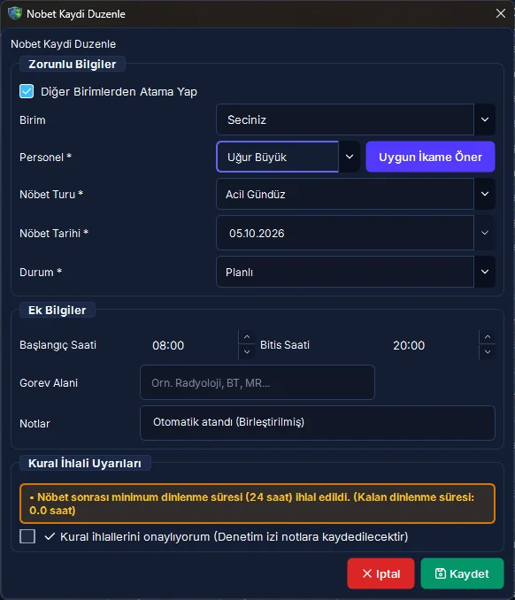

Radyoloji iş gücü operasyonlarında sıfır karmaşa, maksimum verim.
Nöbet planlamasından Şua izinlerine, dozimetre takibinden Olay/DÖF bildirimlerine, RKE DIN 6857-1 muayenelerinden İnteraktif Mimari Plan Kroki izlemesine kadar tüm departman süreçlerinizi NDK, TENMAK, SKS 6.1 ve KVKK (6698) standartlarında hibrit PostgreSQL ve Web Portalı & PWA mimarisiyle yönetin.
Stok görsel değil; hastanelerde çalışan gerçek RADPYS V4 PySide6 ve PWA arayüzü

Radyoloji Nöbet Planlama ve Dozimetre Takip Yazılımı.
Kağıt ve Excel karmaşasına son.
Dağınık Excel çizelgeleri, kaybolan dozimetre çıktıları ve WhatsApp nöbet gruplarının sonu. Her kayıt zaman damgalı, denetlenebilir ve tek merkezde.
Şeffaf kısıtlar, adaletli dağıtım.
Nöbet algoritması yasal mevzuat ve sert/yumuşak kısıtlarla çalışır. Ekip neden o gün nöbette olduğunu şeffafça görür — amirin insafı değil, kurallar geçerlidir.
Askeri düzeyde veri güvenliği.
PostgreSQL altyapısı, AES-256 Fernet şifreli evrak kasası ve KVKK Madde 11 ZIP ihracı. Sağlık verileriniz kurumunuzun tam kontrolünde korunur.
Zamandan ve cezai riskten tasarruf.
Denetim hazırlığı iki gün değil, iki saat. NDK 72 saatlik bildirim, SKS 6.1 Excel raporları ve resmi heyet tutanakları tek tıkla hazır. Yöneticiler saatlerce nöbet çizmekten kurtulur.
Nöbet Planlama, Şua İzni ve Dozimetre Takibi için
23 Entegre Modül.
Kurulum & İlk Giriş
Win32 tekil kilit, Ed25519 lisanslama, parola politikası ve Ctrl+K Evrensel Arama.
Kullanıcı & Rol Yönetimi
RBAC yetki matrisi, 4-göz veri onay kuralı ve güvenli oturum yönetimi.
Sistem Ayarları & Tanımlar
Hiyerarşik departmanlar, kurumsal çift logo ve Word antet şablon motoru.
Veritabanı Bakım & Güvenlik
PostgreSQL pg_dump yedekleme, WAL arşivleme, KVKK AES-256 ve SHA-256 denetim izi.
Personel Yönetimi & İçe Aktar
Dinamik özlük kartı, Excel toplu aktarım motoru ve KVKK Madde 11 ZIP ihracı.
İzin Yönetimi & Şua Hakediş
35s/40s bazlı şua bakiye motoru, 2 aşamalı onay akışı ve cari yıl koruma kilidi.
Nöbet Ayarları & Kısıtlar
Sert/yumuşak kısıt hiyerarşisi, adalet ağırlıkları ve slot bazlı kural tablosu.
Nöbet Hazırlık & Solver
CP-SAT matematiksel optimizasyon, çapraz görevlendirme ve çizelge matrisi.
Nöbet Devir, İkame & Becayiş
3 aşamalı devir onayı, acil mazeret ikame sihirbazı ve Web Portal havuzu.
Nöbet Borç/Alacak & FM
Kıstelyevm hesaplama, 60s kurumsal kota, 130s yasal tavan ve Sudo dönem kilidi.
Fiili Hizmet & Şua Hesaplama
Koşul A/B ayrımı, onaysız izin güvenlik bariyeri ve SGK puantaj cetveli.
Dozimetre Takibi & RD.F43
Hp(10)/Hp(0.07)/Hp(3) doz analitiği, NDK 72s tahkikatı ve doz araştırma formu.
Sağlık Muayeneleri & Taramalar
NDK 365 gün kuralı, Dahiliye/Dermatoloji/Göz onayları ve evrak kasası.
Ortam Dozu & İnteraktif Kroki
Mimari kat planında canlı pinler, QR pasaportu ve SKS 6.1 SRG11.02 Excel raporu.
Olay Bildirimi & DÖF (CAPA)
Web Portal hızlı bildirim, kök neden analizi, CAPA aksiyonları ve NDK 72s sayacı.
RGS / RSO Görevlendirme
Bakanlık & NDK yasal görevlendirmeleri, sertifika vize takibi ve resmi atama yazıları.
Hizmet İçi Eğitim & Sınav LMS
Soru bankası, Excel import, Web video/PDF eğitimi ve online barajlı sınav motoru.
Tıbbi Cihaz & NDK Lisans
4 renkli lisans rozeti, akıllı kod üreteci, kroki pinleme ve resmi NDK çizelgesi.
Cihaz Arıza, Bakım & KKT/KUT
TİTCK uyumlu KKT/KUT ve ihale bakım takvimi, tüp değişimi senkronizasyonu ve mobil QR saha konsolu.
Koruyucu Ekipman (RKE)
DIN 6857-1 skopi SVG krokisi, mm² kusur analiz motoru ve SKS 6.1 Excel cetveli.
Merkezi Onaylar & Diff View
5 sekmeli kurumsal onay kuyruğu, 4-göz görsel Diff View karşılaştırması ve toplu onay.
Web Portalı & Dashboardlar
20 analitik yönetici panosu, 60s akıllı bellek önbelleği ve mobil PWA saha erişimi.
Rapor & Tutanak Merkezi
26 resmi SKS/NDK raporu, Evrensel Tutanak Sihirbazı, Şablon Stüdyosu ve 2 aşamalı HEK mührü.
Yapay Zekâ Destekli Doz Analizi ve
PACS / DICOM Entegrasyonu.
Google TimesFM ile Yapay Zekâlı Doz Trend Tahmini & Rotasyon
1 Trilyon Verili Zero-Shot Transformer
Google Research TimesFM foundation modeliyle sıfır ek model eğitimiyle 6 ay önceden 20 mSv limit aşımı uyarısı, çok değişkenli risk analizi ve radyasyonsuz birimlere akıllı rotasyon önerisi.
NDK & SKS 6.1 Otomatik Denetim Simülatörü & Risk Karnesi
100 Puanlık Resmi Denetim Hazırlık Motoru
Tek tıkla tüm kurumu tarayarak süresi dolan lisans, eksik kalibrasyon, muayenesiz kurşun önlük, eksik şua izni ve kaza bildirimlerini analiz eden resmi denetim karnesi ve hazırlık raporu motoru.
PACS / DICOM RDSR Doz Akış Köprüsü (C-STORE SCP)
Otomatik CTDIvol, DLP & DAP Doz Aktarımı
Hastane PACS sunucusundan BT, Anjiyografi ve Mamografi modalitelerinin DICOM RDSR doz raporlarını otomatik dinleyip nöbet çizelgesiyle eşleştiren mikroservis.
NDK, SKS 6.1 ve RKE DIN 6857-1 Denetimlerinde
Tam Mevzuat Uyumu.
Sağlık Bakanlığı, NDK ve uluslararası radyasyon güvenliği normlarına tam uyum. Denetim süreçlerinde gereken tüm resmi formlar ve raporlar tek merkezde hazır.
NDK 72 Saatlik Acil Bildirim
Limit Aşımı & RD.F43 Formu
Yıllık 20 mSv veya 5 yıllık 100 mSv doz aşımında personeli otomatik riskli statüye alma, 10 iş günü araştırma sayacı ve resmi NDK Form A-1 şablon ihracı.
SKS 6.1 Kalite & DÖF
İstenmeyen Olay Bildirimi
Sağlıkta Kalite Standartları Versiyon 6.1 uyumlu İOBS sistemi. Doz aşımı, cihaz arızası ve ramak kala olaylarında kök neden analizli DÖF/CAPA takibi.
DIN 6857-1 / DIN 6857-2
Kurşun Koruyucu Muayenesi
Kurşun önlük, tiroid ve gonat koruyucuların yıllık skopi kontrolü, akıllı karekodlama ve kurşun eşdeğeri (Pb) kalite kontrol arşivi.
KVKK 6698 & AES-256
Şifreli Kasa & PostgreSQL
Personel özlük evrakları ve sağlık verileri diske açık yazılmaz; AES-256 Fernet şifreleme ve kurum içi PostgreSQL veritabanında güvenle saklanır.
Radyasyon Güvenliği, Şua İzni ve Dozimetre Sıkça Sorulan Sorular.
Kullanım kılavuzumuz ve mevzuat kuralları doğrultusunda derlenen en kritik soru ve yanıtlar.
RADPYS V4 dozimetre limit aşımında NDK 72 saatlik bildirim sürecini nasıl yönetir? ↓
Personelin 12 aylık kümülatif dozu 20 mSv (veya 5 yıllık 100 mSv) yasal sınırını aştığında, sistem personeli otomatik olarak "Yüksek Riskli" statüsüne alır. NDK mevzuatına uygun 72 saatlik resmi acil bildirim şablonunu (Form A-1), 10 iş günü araştırma sayacını ve 2 sayfalık resmi RD.F43 Doz Araştırma Formunu tek tıkla üretir.
Şua İzni (Sağlık İzni) takibi ve zamanaşımı uyarıları nasıl çalışır? ↓
Sağlık Bakanlığı ve NDK mevzuatı gereği 4 haftalık Şua izni parçalı kullanılamaz ve sonraki takvim yılına devretmez. RADPYS V4, yıl sonuna 60 gün ve 30 gün kala kademeli erken uyarı rozetleri ([⏳ 45g], [🚨 15g]) üreterek personelin hakkının zamanaşımına uğramasını önler.
RKE DIN 6857-1 / DIN 6857-2 Kurşun Koruyucu Ekipman modülü ne sağlar? ↓
Kurşun önlük, tiroid koruyucu, gonat koruyucu ve kurşun eldivenlerin yıllık skopi kontrollerini, fiziksel muayenelerini ve kurşun eşdeğeri (Pb mm) ölçümlerini takip eder. Her ekipmana özel karekod üretir ve hasarlı ekipmanların 2 aşamalı HEK tutanağı ile kullanım dışı yapılmasını sağlar.
Veri güvenliği ve KVKK 6698 uyumu nasıl sağlanır? ↓
Personel sağlık raporları, dozimetre dökümleri ve özlük evrakları sunucu diskine açık yazılmaz. AES-256 Fernet algoritmasıyla şifreli blob formatında PostgreSQL veritabanında saklanır. KVKK Madde 11 kapsamında şifreli ZIP personel veri ihracı imkanı sunar.
SKS 6.1 Kalite Standartları ve İstenmeyen Olay Bildirimi (İOBS) entegrasyonu var mı? ↓
Evet. Sağlıkta Kalite Standartları Versiyon 6.1 ile birebir uyumlu İstenmeyen Olay Bildirim Modülü içerir. Doz aşımı, cihaz arızası veya kontaminasyon durumlarında Düzeltici Önleyici Faaliyet (DÖF / CAPA) akışları başlatılır ve resmi Excel/PDF çıktıları alınabilir.
Rakamlarla Türkiye Genelinde RADPYS V4.
Radyoloji Yönetim Sistemi Kurulumu ve
Demo Talebi İçin Bize Ulaşın.
Kurumunuza özel dozimetre, nöbet, RKE kalite kontrol ve KVKK süreçleri hakkında bilgi almak ve Elit Paket teklifi istemek için ekibimizle iletişime geçin.